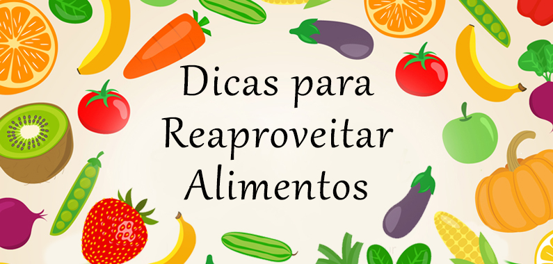

Aqui vamos ensinar vocês de como reaproveitar comida de uma forma leve e saudável .
Após as refeições, a grande maioria das pessoas joga fora o que sobrou da comida. Isso acontece também após o consumo de frutas e demais vegetais. Mas já está se popularizando a ideia de que esses resíduos aparentemente "inúteis" podem ser aproveitados de diversas maneiras, para evitar o desperdício. Na cultura brasileira, entendemos talos, cascas e demais “sobras” de alimentos no preparo como resíduos inúteis. Mas não é bem por aí. Essas partes costumam estar cheias de nutrientes e são fáceis de serem armazenadas e aproveitadas integralmente em preparos tradicionais. Para começar, é fundamental destacar a importância da higienização correta dos alimentos por completo, inclusive de partes que iriam para o lixo. Assim, ao entender como reaproveitar cascas de alimentos, por exemplo, você garante seu uso seguro, sem causar danos à saúde. Feito isso, talos, pedaços amassados, cascas e folhas são fontes ricas de nutrientes e fibras. Use essas partes em preparos como:
Segue algumas receitas, que utilizam dessas práticas.